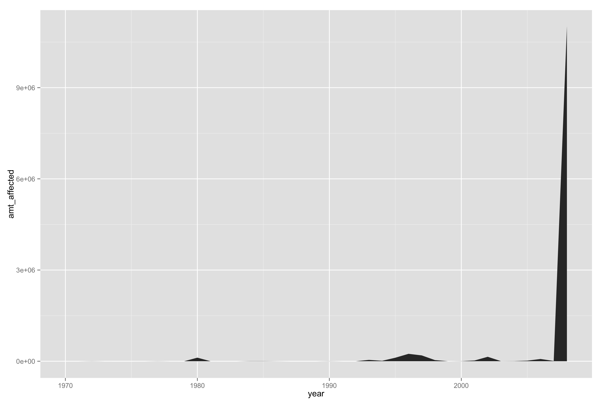
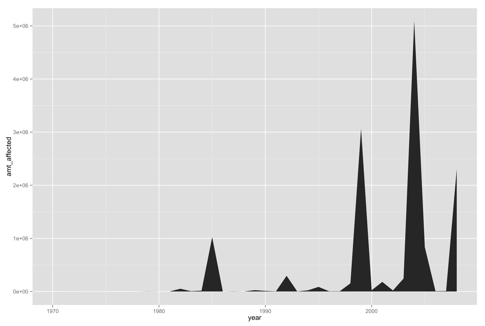

I ended up using just the Gallup data that I found, primarily because it just happened to be a lot more interetsing to me, and because (as you may be able to see below), the long-term time series data on certain environmental factors (storms, gas prices, etc.), didn't end up correlating much with the survey data as I thought it would. However, I think that has a little more to do with the nature of the Gallup survey: there were lots of inconsistencies in the same questions being asked year to year, and the terminology often used different terms for climate change interchangeably, resulting in a lot of redundancy. They also tended to be so long term, and climate, by definition, spans about 30 years, so it would be hard to see much change in the 15 years that Gallup has been conducting the Environmental survey.
In terms of design choices, I tried to choose complimentary colors that I could assign to each issue; green=environment, red-orange=economy, blue=energy, etc. I have never learned anything about color theory, so in every project, this tends to be something I wrestle with. I used Adobe Kulers website (becuase I can never get color brewer working in my RStudio!) and explored a ton of complementary, analagous, and monochromatic combinations of these colors to try and make it work. I still think the colors are a little too bright, but I can't seem to make them less so...
I also struggled with this last chart a little bit. I think one of the first things we learned in this course was that simple doesn't have to be boring, and I tried a lot of different ways to display this information, but the scientist in me kept stopping me every time I compromised the statistical aspects of the chart when I played around with it. I think if I had more time, I would figure out a way to emphasize the period there where people said the environment should be prioritized, and look into some events that I could label.I tried shading that area, etc. but it kept looking a little bit like an out-of-place blob.
For starters, here are the charts that I ended up ditching, for various reasons.
 These are all some of the time series craphs describing weather events (first two:floods and storms) that showed an interesting event in 2008 (the midwest floods), but not much more
These two were more time series charts that didn't say much, and I had started making them in the hopes that the gallup data would coincide. But alas, the data on gas prices and spending/attitudes from Gallup were sparse, and only asked a handful of years
These are some Gallup charts I dropped because I had so much trouble figuring out how to style them. The first one had a gap in data -- one year that the survey didn't ask the question, as you can see, and I wasn't sure how to properly address that. The second two are steps 1 and 2 of the process of finalizing, but, as you can see, I struggled making my color code work here. Red and green are a tough combo. I get that now.
These two are just the "before" pics of some of my final graphs before their Illustrator makeovers. The effects plot started out as a line graph, but I wanted to try to make a stacked area chart that was ordered by percentage. I'm not entirely sure it works, I think it could use more work, in terms of color and general chunkiness, but I'm glad I pulled it off.